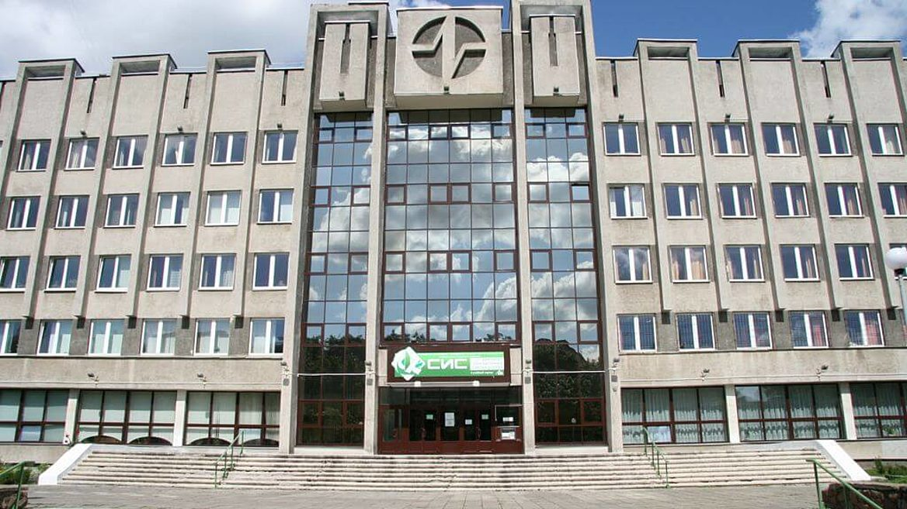

|
ИЭФ |
БГУИР |
ИСИТ в экономике |
||
|
ФРЭ приглашает принять участие в конкурсе профессионального мастерства среди студентов направления специальности 1-08 01 01-07 «Профессиональное обучение (информатика)», приуроченном ко Дню учителя и организуемом в рамках проекта «Педагогическая студенческая гостиная». |
Третий тур конкурса состоится 1 октября с 9.00 до 14.00. В третьем туре участвуют студенты, которые получили хотя бы один балл в первом туре конкурса вне зависимости от их участия (или неучастия) во втором туре. Участникам необходимо записать видео, в котором они читают стихотворение (на выбор студента), приуроченное к празднику - Дню учителя, разместить видеоролик в облачном хранилище, а ссылку на него отправить до времени окончания тура на e-mail зам. декана ФРЭ Бирана С.А. (biran@bsuir.by). Второй тур - флешмоб «Поздравляем с Днем учителя!» и творческий конкурс по изготовлению поделки-цветка из бумаги состоится 30 сентября с 14.00 до 19.00 в рекреации 3 этажа (возле ауд. 339-1). Участникам необходимо изготовить бумажный цветок самостоятельно или по инструкции, которая вместе с необходимым материалом будет размещена на столе возле стенда во время проведения конкурса, и вместе с карточкой фамилии участника прикрепить его на стенд. Во втором туре участвуют студенты, которые получили хотя бы один балл в первом туре конкурса. Цветок могут изготовить и разместить на стенде не только участники конкурса, но и все желающие, поздравив таким образом своих педагогов с профессиональным праздником. |
 | ||
|
Участники, набравшие наибольшее количество баллов за все три этапа, получат памятные призы и подарки! Награждение состоится 4 октября 2021 г. Желаем удачи и ждем Вас в качестве участников! |
||||
|
Места с самой вкусной кухней Рядом с бгуир
|
Поступление на ИЭФ:
|
В буфете продают:
|
||